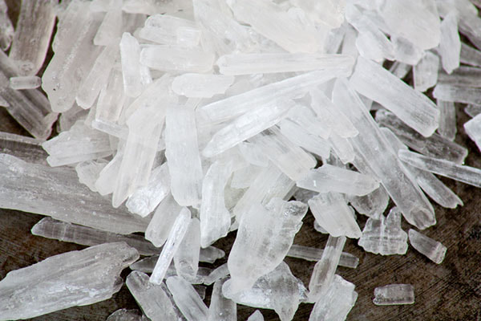

First, What is Methamphetamine and how does it affect your body and brain?
Methamphetamine (Or Meth for Short) is a stimulant drug so it makes the user feel energized and pumped up. It works by creating a large amount of dopamine in the brain and causes the user to become addicted to it. It rewires the brain so if the user stops taking meth he or she will start to feel really sick. Some short term effects of Meth are more energy, higher body temperature, faster heart rate, faster breathing, and not feeling hungry. Some long term effects of Meth are anxiety, confusion, itchy skin, sores, extreme weight loss, and rotting teeth.
Below is a picture of Crystal Meth
So how do people take Meth? Where does Meth Come From? What is Meth Classified As?
Methamphetamine can be administered in multiple ways. People can smoke it, swallow it in a form of a pill, snort it, or inject a diluted powder version of it. Methamphetamine is a mixture of various chemicals. The main chemical is amphetamine which is a stimulant drug used to treat ADHD and Narcolepsy. This chemical is mixed with other ingredients such as pseudoephedrine, battery acid, drain cleaners, lantern fuel, and antifreeze. Legally Methamphetamine is classified on its own as Methamphetamine. Researchers track the number of related overdoses specifically for Methamphetamine. Chemically, it is a version of amphetamine.
Some Other Names for Methamphetamine Include:
Some Terms for Getting High on Meth Include:
Treatment Options and How to Quit
Quitting Meth is Not easy, and many people are here to help. Below are Some Links to Treatment Groups
SAMHSA's National Helpline or call 1-800-662-4357 Crystal Meth AnonymousQuitting Meth involves going through a detox. This can be done alone, with family/friends, or at a detox center. Detox Centers provide a safe space for a person undergoing detox with step by step consulation.
Below are symptoms of what a person going through detox could expect.

Thank you For Reading my Project on Meth! Below are my sources
Addiction Center American Addiction Center Drug Abuse.gov Drug Free WorldNational Institute on Drug Abuse; National Institutes of Health; U.S. Department of Health and Human Services.
You Can Find a link to this Github Repository here